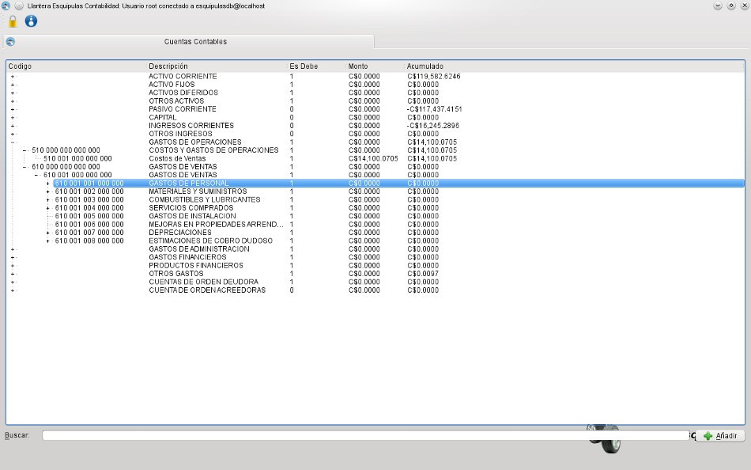
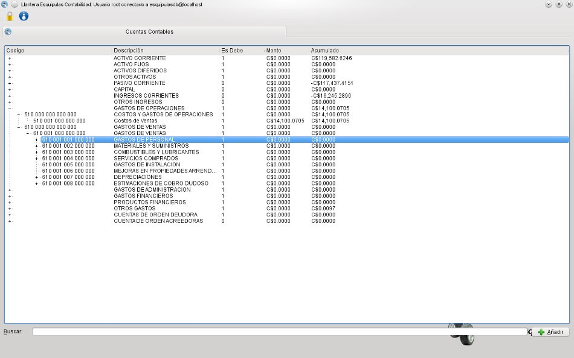

MIS Esquipulas Contabilidad: Catalogo de Cuentas Contables
Este catalogo muestra las cuentas contables con su monto y acumulado, puede añadir y buscar entre todas las cuentas.
Catalogo de cuentas contables
Este catalogo muestra las cuentas contables con su monto y acumulado, puede añadir y buscar entre todas las cuentas.
Catalogo de cuentas contables